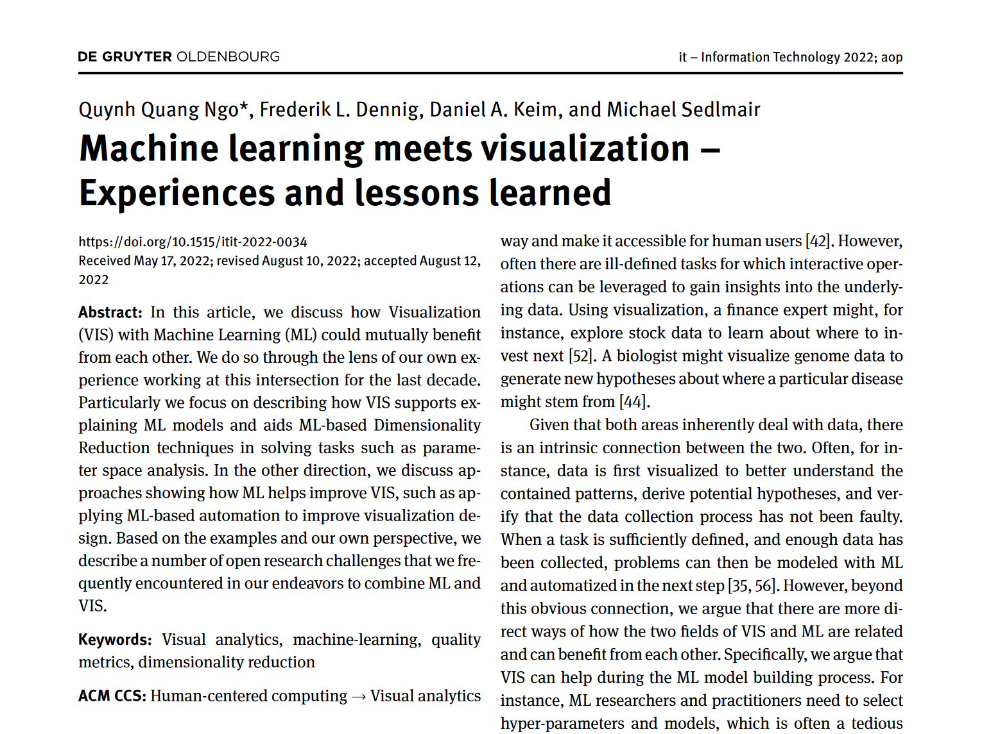

Machine learning meets visualization – Experiences and lessons learned

Authors. Quynh Quang Ngo, Frederik L. Dennig, Daniel A. Keim, Michael Sedlmair
Venue. it - Information Technology (2022)
Abstract. In this article, we discuss how Visualization (VIS) with Machine Learning (ML) could mutually benefit from each other. We do so through the lens of our own experience working at this intersection for the last decade. Particularly we focus on describing how VIS supports explaining ML models and aids ML-based Dimensionality Reduction techniques in solving tasks such as parameter space analysis. In the other direction, we discuss approaches showing how ML helps improve VIS, such as applying ML-based automation to improve visualization design. Based on the examples and our own perspective, we describe a number of open research challenges that we frequently encountered in our endeavors to combine ML and VIS.
Acknowledgements. This work was funded by the Deutsche Forschungsgemeinschaft (DFG, German Research Foundation) within the projects A03 and A08 of TRR 161 (Project-ID 251654672)